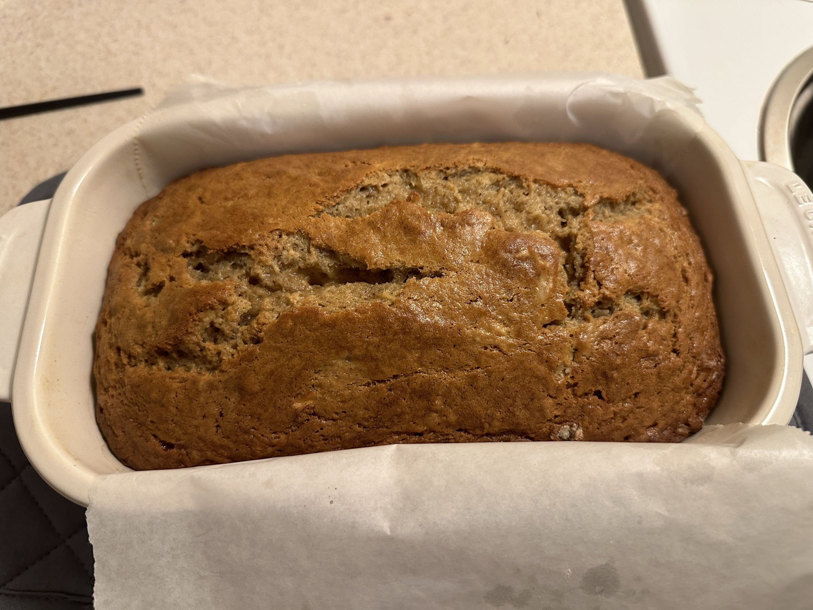

Wrong Recipe? Click here to go back home
Tried and True Banana Bread

This is a recipe of mine that is battle-tested, having earned its spot
through extensive experimentation and much trial and error.
Ingredients
- 1 cup white sugar
- 1/2 cup butter, softened
- 2 eggs
- 1 teaspoon vanilla extract
- 1 teaspoon lemon juice
- 1 3/4 cup all-purpose flour
- 1 teaspoon baking soda
- 1 teaspoon baking powder
- 1/2 teaspoon salt
- 1/2 cup sour cream
- 1/2 cup chopped walnuts (optional)
- 1 cup bananas, mashed
Steps
Preheat the oven to 350 degrees F and grease
a 9x5-inch loaf pan
I choose to also use parchment paper, as it makes removing the bread easier
- Cream together sugar and softened butter
- Add eggs, vanilla, and lemon juice; mix well.
- Mix in flour, baking soda, baking powder, and salt.
- Fold in bananas, sour cream, and walnuts (if using)
and pour into the prepared pan.
Be careful not to overmix!
- Bake in the preheated oven until a toothpick inserted into the
center comes out clean, about an hour
- Cool loaf in pan for 10 minutes before removing onto
wire rack to cool completely